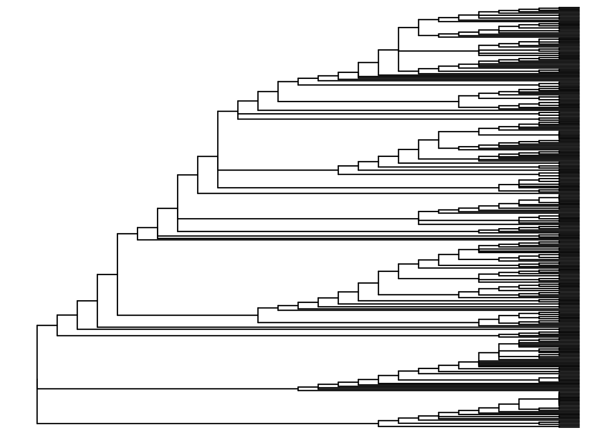
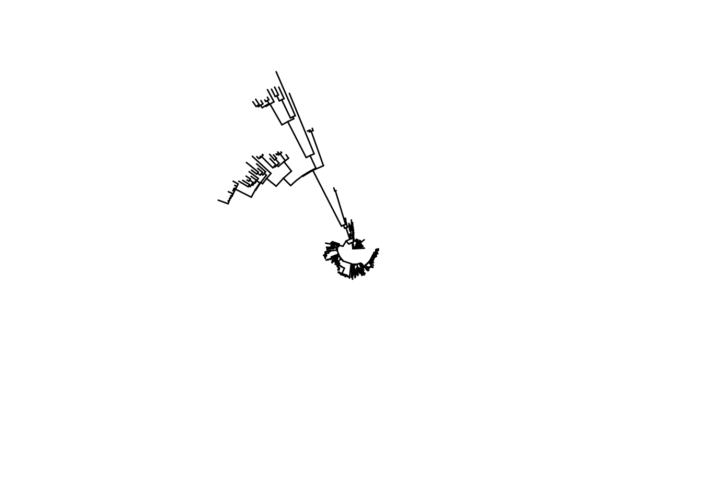

1 Árboles filogenéticos. Borrador
1.1 Resumen
Los árboles filogenéticos se utilizan para visualizar y describir el parentesco y la evolución de los organismos a partir de la secuencia de su código genético.
Pueden construirse a partir de secuencias genéticas utilizando métodos basados en la distancia (como el método de unión de vecinos) o métodos basados en los caracteres (como el método de máxima verosimilitud y el método Bayesiano Markov Chain Monte Carlo). La secuenciación de nueva generación (NGS) se ha vuelto más asequible y se está utilizando cada vez más en la sanidad pública para describir los patógenos causantes de enfermedades infecciosas. Los dispositivos de secuenciación portátiles reducen el tiempo de respuesta y prometen hacer que los datos estén disponibles para apoyar la investigación de brotes en tiempo real. Los datos de NGS pueden utilizarse para identificar el origen o la fuente de una cepa de un brote y su propagación, así como para determinar la presencia de genes de resistencia a los antimicrobianos. Para visualizar el parentesco genético entre las muestras se construye un árbol filogenético.
En esta página aprenderemos a utilizar el paquete ggtree, que permite la visualización combinada de árboles filogenéticos con datos de muestra adicionales en forma de dataframe. Esto nos permitirá observar patrones y mejorar la comprensión de la dinámica de los brotes.
## Installing package into '/home/peron/R/x86_64-pc-linux-gnu-library/4.1'
## (as 'lib' is unspecified)## Warning: package 'ggtree' is not available for this version of R
##
## A version of this package for your version of R might be available elsewhere,
## see the ideas at
## https://cran.r-project.org/doc/manuals/r-patched/R-admin.html#Installing-packages##
## ggtree installed1.2 Preparación
1.2.1 Cargar paquetes
Este trozo de código muestra la carga de los paquetes necesarios. En este manual destacamos ‘p_load()’ de pacman, que instala el paquete si es necesario y lo carga para su uso. También puede cargar los paquetes instalados con library() de . Consulta la página sobre los fundamentos de R para obtener más información sobre los paquetes de R.
pacman::p_load(
rio, # import/export
here, # relative file paths
tidyverse, # general data management and visualization
ape, # to import and export phylogenetic files
ggtree, # to visualize phylogenetic files
treeio, # to visualize phylogenetic files
ggnewscale) # to add additional layers of color schemes1.2.2 Importar datos
Los datos de esta página pueden descargarse con las instrucciones de la página de descarga de manuales y datos.
Hay varios formatos diferentes en los que se puede almacenar un árbol filogenético (por ejemplo, Newick, NEXUS, Phylip). Uno de los más comunes es el formato de archivo Newick (.nwk), que es el estándar para representar árboles en forma legible por ordenador. Esto significa que un árbol completo puede expresarse en un formato de cadena como “((t2:0,04,t1:0,34):0,89,(t5:0,37,(t4:0,03,t3:0,67):0,9):0,59);”, enumerando todos los nodos y puntas y su relación (longitud de rama) entre sí.
Nota: Es importante entender que el archivo del árbol filogenético en sí mismo no contiene datos de secuenciación, sino que es simplemente el resultado de las distancias genéticas entre las secuencias. Por lo tanto, no podemos extraer datos de secuenciación de un archivo de árbol.
En primer lugar, utilizamos la función read.tree() del paquete ape para importar un archivo de árbol filogenético de Newick en formato .txt, y lo almacenamos en un objeto tipo lista “phylo”. Si es necesario, utiliza la función here() del paquete here para especificar la ruta relativa del archivo.
Nota: En este caso el árbol newick se guarda como un archivo .txt para facilitar su manejo y descarga desde Github.
tree <- ape::read.tree("Shigella_tree.txt")Inspeccionamos nuestro objeto árbol y vemos que contiene 299 puntas (o muestras) y 236 nodos.
tree##
## Phylogenetic tree with 299 tips and 236 internal nodes.
##
## Tip labels:
## SRR5006072, SRR4192106, S18BD07865, S18BD00489, S17BD08906, S17BD05939, ...
## Node labels:
## 17, 29, 100, 67, 100, 100, ...
##
## Rooted; includes branch lengths.En segundo lugar, importamos una tabla almacenada en un archivo .csv con información adicional para cada muestra secuenciada, como el sexo, el país de origen y los atributos de resistencia a los antimicrobianos, utilizando la función import() del paquete rio:
sample_data <- import("sample_data_Shigella_tree.csv")A continuación se muestran las primeras 50 filas de los datos:
1.2.3 Limpiar e inspeccionar
Limpiamos e inspeccionamos nuestros datos: Para asignar los datos de muestra correctos al árbol filogenético, los valores de la columna Sample_ID en el dataframe sample_data deben coincidir con los valores de tip.labels en el archivo tree:
Comprobamos el formato de los tip.labels en el archivo de árbol mirando las 6 primeras entradas usando con head() de R base.
head(tree$tip.label) ## [1] "SRR5006072" "SRR4192106" "S18BD07865" "S18BD00489" "S17BD08906" "S17BD05939"También nos aseguramos de que la primera columna de nuestro dataframe sample_data sea Sample_ID. Miramos los nombres de las columnas de nuestro dataframe utilizando colnames() de R base.
colnames(sample_data) ## [1] "Sample_ID" "serotype" "Country" "Continent" "Travel_history"
## [6] "Year" "Belgium" "Source" "Gender" "gyrA_mutations"
## [11] "macrolide_resistance_genes" "MIC_AZM" "MIC_CIP"Miramos los Sample_IDs en el dataframe para asegurarnos de que el formato es el mismo que en el tip.label (por ejemplo, las letras son todas mayúsculas, no hay barras bajas adicionales _ entre las letras y los números, etc.)
head(sample_data$Sample_ID) # we again inspect only the first 6 using head()## [1] "S17BD05944" "S15BD07413" "S18BD07247" "S19BD07384" "S18BD07338" "S18BD02657"También podemos comparar si todas las muestras están presentes en el archivo tree y viceversa, generando un vector lógico de TRUE o FALSE donde coinciden o no. Estos no se imprimen aquí, para simplificar.
sample_data$Sample_ID %in% tree$tip.label
tree$tip.label %in% sample_data$Sample_IDPodemos utilizar estos vectores para mostrar cualquier ID de muestra que no esté en el árbol (no hay ninguna).
sample_data$Sample_ID[!tree$tip.label %in% sample_data$Sample_ID]## character(0)Al inspeccionar podemos ver que el formato de Sample_ID en el dataframe corresponde al formato de los nombres de las muestras en el tip.labels. No es necesario que estén clasificados en el mismo orden para que coincidan.
Estamos listos para ir!
1.3 Visualización simple de un árbol
1.3.1 Different tree layouts
ggtree ofrece muchos formatos de presentación diferentes y algunos pueden ser más adecuados para su propósito específico que otros. A continuación se muestran algunas demostraciones. Para otras opciones, consulta este libro en línea.
A continuación, algunos ejemplos de disposición de árboles:
ggtree(tree) # simple linear tree
ggtree(tree, branch.length = "none") # simple linear tree with all tips aligned
ggtree(tree, layout="circular") # simple circular tree
ggtree(tree, layout="circular", branch.length = "none") # simple circular tree with all tips aligned
1.3.2 Árbol simple con datos de muestra
El operador %<+% se utiliza para conectar el dataframe sample_data con el archivo tree. La anotación más sencilla de su árbol es la adición de los nombres de las muestras en las puntas, así como la coloración de los puntos de las puntas y, si se desea, de las ramas:
Este es un ejemplo de árbol circular:
ggtree(tree, layout = "circular", branch.length = 'none') %<+% sample_data + # %<+% adds dataframe with sample data to tree
aes(color = I(Belgium))+ # color the branches according to a variable in your dataframe
scale_color_manual(
name = "Sample Origin", # name of your color scheme (will show up in the legend like this)
breaks = c("Yes", "No"), # the different options in your variable
labels = c("NRCSS Belgium", "Other"), # how you want the different options named in your legend, allows for formatting
values = c("blue", "black"), # the color you want to assign to the variable
na.value = "black") + # color NA values in black as well
new_scale_color()+ # allows to add an additional color scheme for another variable
geom_tippoint(
mapping = aes(color = Continent), # tip color by continent. You may change shape adding "shape = "
size = 1.5)+ # define the size of the point at the tip
scale_color_brewer(
name = "Continent", # name of your color scheme (will show up in the legend like this)
palette = "Set1", # we choose a set of colors coming with the brewer package
na.value = "grey") + # for the NA values we choose the color grey
geom_tiplab( # adds name of sample to tip of its branch
color = 'black', # (add as many text lines as you wish with + , but you may need to adjust offset value to place them next to each other)
offset = 1,
size = 1,
geom = "text",
align = TRUE)+
ggtitle("Phylogenetic tree of Shigella sonnei")+ # title of your graph
theme(
axis.title.x = element_blank(), # removes x-axis title
axis.title.y = element_blank(), # removes y-axis title
legend.title = element_text( # defines font size and format of the legend title
face = "bold",
size = 12),
legend.text=element_text( # defines font size and format of the legend text
face = "bold",
size = 10),
plot.title = element_text( # defines font size and format of the plot title
size = 12,
face = "bold"),
legend.position = "bottom", # defines placement of the legend
legend.box = "vertical", # defines placement of the legend
legend.margin = margin()) Puedes exportar el gráfico de árbol con ggsave() como lo harías con cualquier otro objeto ggplot. Escrito de esta manera, ggsave() guarda la última imagen producida en la ruta de archivo que especifiques. Recuerde que puede utilizar here() y rutas de archivo relativas para guardar fácilmente en subcarpetas, etc.
ggsave("example_tree_circular_1.png", width = 12, height = 14)1.4 Manipulación de árboles
A veces puede tener un árbol filogenético muy grande y sólo le interesa una parte del árbol. Por ejemplo, si ha producido un árbol que incluye muestras históricas o internacionales para obtener una gran visión general de dónde puede encajar su conjunto de datos en el panorama general. Pero luego, para ver más de cerca sus datos, quiere inspeccionar sólo esa parte del árbol más grande.
Dado que el archivo del árbol filogenético es sólo el resultado del análisis de los datos de secuenciación, no podemos manipular el orden de los nodos y las ramas en el propio archivo. Estos ya han sido determinados en análisis anteriores a partir de los datos NGS en bruto. Sin embargo, podemos ampliar partes, ocultar partes e incluso subconjuntar partes del árbol.
1.4.1 Acercarse
Si no quieres “cortar” tu árbol, sino sólo inspeccionar una parte de él más de cerca, puedes acercarte para ver una parte específica.
En primer lugar, trazamos todo el árbol en formato lineal y añadimos etiquetas numéricas a cada nodo del árbol.
p <- ggtree(tree,) %<+% sample_data +
geom_tiplab(size = 1.5) + # labels the tips of all branches with the sample name in the tree file
geom_text2(
mapping = aes(subset = !isTip,
label = node),
size = 5,
color = "darkred",
hjust = 1,
vjust = 1) # labels all the nodes in the tree
p # printPara acercarse a una rama en particular (que sobresale a la derecha), utiliza viewClade() en el objeto ggtree p y proporcione el número de nodo para verlo más de cerca:
viewClade(p, node = 452)1.4.2 Ramas colapsadas
Sin embargo, podemos querer ignorar esta rama y podemos colapsarla en ese mismo nodo (nodo 452) utilizando collapse(). Este árbol se define como p_collapsed.
p_collapsed <- collapse(p, node = 452)
p_collapsedPara mayor claridad, cuando imprimimos p_collapsed, añadimos un geom_point2() (un diamante azul) en el nodo de la rama colapsada.
p_collapsed +
geom_point2(aes(subset = (node == 452)), # we assign a symbol to the collapsed node
size = 5, # define the size of the symbol
shape = 23, # define the shape of the symbol
fill = "steelblue") # define the color of the symbol1.4.3 Subconjunto de un árbol
Si queremos hacer un cambio más permanente y crear un nuevo árbol reducido con el que trabajar, podemos subconjuntar parte de él con tree_subset(). Luego se puede guardar como un nuevo archivo de árbol o archivo .txt.
En primer lugar, inspeccionamos los nodos del árbol y las etiquetas de las puntas para decidir qué se va a subconjuntar.
ggtree(
tree,
branch.length = 'none',
layout = 'circular') %<+% sample_data + # we add the asmple data using the %<+% operator
geom_tiplab(size = 1)+ # label tips of all branches with sample name in tree file
geom_text2(
mapping = aes(subset = !isTip, label = node),
size = 3,
color = "darkred") + # labels all the nodes in the tree
theme(
legend.position = "none", # removes the legend all together
axis.title.x = element_blank(),
axis.title.y = element_blank(),
plot.title = element_text(size = 12, face="bold"))
Ahora, digamos que hemos decidido hacer un subconjunto del árbol en el nodo 528 (mantener sólo las puntas dentro de esta rama después del nodo 528) y lo guardamos como un nuevo objeto sub_tree1:
sub_tree1 <- tree_subset(
tree,
node = 528) # we subset the tree at node 528Veamos el subconjunto del árbol 1:
ggtree(sub_tree1) +
geom_tiplab(size = 3) +
ggtitle("Subset tree 1")También puede hacer un subconjunto basado en una muestra en particular, especificando cuántos nodos “hacia atrás” quiere incluir. Vamos a subconjuntar la misma parte del árbol basándonos en una muestra, en este caso S17BD07692, retrocediendo 9 nodos y lo guardamos como un nuevo objeto sub_tree2:
sub_tree2 <- tree_subset(
tree,
"S17BD07692",
levels_back = 9) # levels back defines how many nodes backwards from the sample tip you want to goVeamos el subconjunto del árbol 2:
ggtree(sub_tree2) +
geom_tiplab(size =3) +
ggtitle("Subset tree 2")También puede guardar su nuevo árbol como un tipo Newick o incluso un archivo de texto utilizando la función write.tree() del paquete ape:
# to save in .nwk format
ape::write.tree(sub_tree2, file='data/phylo/Shigella_subtree_2.nwk')
# to save in .txt format
ape::write.tree(sub_tree2, file='data/phylo/Shigella_subtree_2.txt')1.4.4 Rotación de nodos en un árbol
Como ya hemos dicho, no podemos cambiar el orden de las puntas o de los nodos en el árbol, ya que éste se basa en su parentesco genético y no está sujeto a manipulación visual. Pero podemos rotar las ramas alrededor de los nodos si eso facilita nuestra visualización.
En primer lugar, trazamos nuestro nuevo subconjunto de árbol 2 con las etiquetas de los nodos para elegir el nodo que queremos manipular y lo almacenamos en un objeto ggtree plot p.
p <- ggtree(sub_tree2) +
geom_tiplab(size = 4) +
geom_text2(aes(subset=!isTip, label=node), # labels all the nodes in the tree
size = 5,
color = "darkred",
hjust = 1,
vjust = 1)
p
Luego podemos manipular los nodos aplicando ggtree::rotate() o ggtree::flip(): Nota: para ilustrar qué nodos estamos manipulando aplicamos primero la función geom_hilight() de ggtree para resaltar las muestras de los nodos que nos interesan y almacenamos ese objeto de trazado de ggtree en un nuevo objeto p1.
p1 <- p + geom_hilight( # highlights node 39 in blue, "extend =" allows us to define the length of the color block
node = 39,
fill = "steelblue",
extend = 0.0017) +
geom_hilight( # highlights the node 37 in yellow
node = 37,
fill = "yellow",
extend = 0.0017) +
ggtitle("Original tree")
p1 # printAhora podemos rotar el nodo 37 en el objeto p1 para que las muestras del nodo 38 se muevan hacia arriba. Almacenamos el árbol rotado en un nuevo objeto p2
p2 <- rotate(p1, 37) +
ggtitle("Rotated Node 37")
p2 # printO podemos usar el comando flip para rotar el nodo 36 en el objeto p1 y cambiar el nodo 37 a la parte superior y el nodo 39 a la parte inferior. Almacenamos el árbol volteado en un nuevo objeto p3.
p3 <- flip(p1, 39, 37) +
ggtitle("Rotated Node 36")
p3 # print1.4.5 Ejemplo de subárbol con anotación de datos de muestra
Digamos que estamos investigando el grupo de casos con expansión clonal que se produjo en 2017 y 2018 en el nodo 39 de nuestro subárbol. Añadimos el año de aislamiento de la cepa, así como el historial de viajes y el color por país para ver el origen de otras cepas estrechamente relacionadas:
ggtree(sub_tree2) %<+% sample_data + # we use th %<+% operator to link to the sample_data
geom_tiplab( # labels the tips of all branches with the sample name in the tree file
size = 2.5,
offset = 0.001,
align = TRUE) +
theme_tree2()+
xlim(0, 0.015)+ # set the x-axis limits of our tree
geom_tippoint(aes(color=Country), # color the tip point by continent
size = 1.5)+
scale_color_brewer(
name = "Country",
palette = "Set1",
na.value = "grey")+
geom_tiplab( # add isolation year as a text label at the tips
aes(label = Year),
color = 'blue',
offset = 0.0045,
size = 3,
linetype = "blank" ,
geom = "text",
align = TRUE)+
geom_tiplab( # add travel history as a text label at the tips, in red color
aes(label = Travel_history),
color = 'red',
offset = 0.006,
size = 3,
linetype = "blank",
geom = "text",
align = TRUE)+
ggtitle("Phylogenetic tree of Belgian S. sonnei strains with travel history")+ # add plot title
xlab("genetic distance (0.001 = 4 nucleotides difference)")+ # add a label to the x-axis
theme(
axis.title.x = element_text(size = 10),
axis.title.y = element_blank(),
legend.title = element_text(face = "bold", size = 12),
legend.text = element_text(face = "bold", size = 10),
plot.title = element_text(size = 12, face = "bold"))Nuestra observación apunta a un evento de importación de cepas procedentes de Asia, que luego circularon en Bélgica a lo largo de los años y parecen haber causado nuestro último brote.
1.5 Árboles más complejos: añadir mapas térmicos de datos de muestra
Podemos añadir información más compleja, como la presencia categórica de genes de resistencia a los antimicrobianos y valores numéricos para la resistencia realmente medida a los antimicrobianos en forma de mapa de calor utilizando la función ggtree::gheatmap().
Primero necesitamos trazar nuestro árbol (puede ser lineal o circular) y almacenarlo en un nuevo objeto ggtree plot p: Utilizaremos el subárbol de la parte 3).
p <- ggtree(sub_tree2, branch.length='none', layout='circular') %<+% sample_data +
geom_tiplab(size =3) +
theme(
legend.position = "none",
axis.title.x = element_blank(),
axis.title.y = element_blank(),
plot.title = element_text(
size = 12,
face = "bold",
hjust = 0.5,
vjust = -15))
p
En segundo lugar, preparamos nuestros datos. Para visualizar las diferentes variables con nuevos esquemas de color, subestablecimos nuestro dataframe a la variable deseada. Es importante añadir el Sample_ID como rownames de lo contrario no puede coincidir los datos con el árbol tip.labels:
En nuestro ejemplo, queremos observar el género y las mutaciones que podrían conferir resistencia a la ciprofloxacina, un importante antibiótico de primera línea utilizado para tratar las infecciones por Shigella.
Creamos un dataframe para el género:
gender <- data.frame("gender" = sample_data[,c("Gender")])
rownames(gender) <- sample_data$Sample_IDCreamos un dataframe para las mutaciones en el gen gyrA, que confieren resistencia a la ciprofloxacina:
cipR <- data.frame("cipR" = sample_data[,c("gyrA_mutations")])
rownames(cipR) <- sample_data$Sample_IDCreamos un dataframe para la concentración inhibitoria mínima (CIM) medida para la Ciprofloxacina del laboratorio:
MIC_Cip <- data.frame("mic_cip" = sample_data[,c("MIC_CIP")])
rownames(MIC_Cip) <- sample_data$Sample_IDCreamos un primer gráfico añadiendo un mapa de calor binario para el género al árbol filogenético y almacenándolo en un nuevo objeto de gráfico ggtree h1:
h1 <- gheatmap(p, gender, # we add a heatmap layer of the gender dataframe to our tree plot
offset = 10, # offset shifts the heatmap to the right,
width = 0.10, # width defines the width of the heatmap column,
color = NULL, # color defines the boarder of the heatmap columns
colnames = FALSE) + # hides column names for the heatmap
scale_fill_manual(name = "Gender", # define the coloring scheme and legend for gender
values = c("#00d1b1", "purple"),
breaks = c("Male", "Female"),
labels = c("Male", "Female")) +
theme(legend.position = "bottom",
legend.title = element_text(size = 12),
legend.text = element_text(size = 10),
legend.box = "vertical", legend.margin = margin())## Scale for 'y' is already present. Adding another scale for 'y', which will replace the existing scale.## Scale for 'fill' is already present. Adding another scale for 'fill', which will replace the existing scale.
h1
A continuación, añadimos información sobre las mutaciones en el gen gyrA, que confieren resistencia a la ciprofloxacina:
Nota: La presencia de mutaciones puntuales cromosómicas en los datos de WGS se determinó previamente utilizando la herramienta PointFinder desarrollada por Zankari et al. (véase la referencia en la sección de referencias adicionales)
En primer lugar, asignamos un nuevo esquema de colores a nuestro objeto de trazado existente h1 y lo almacenamos en un objeto ahora h2. Esto nos permite definir y cambiar los colores para nuestra segunda variable en el mapa de calor.
h2 <- h1 + new_scale_fill() A continuación, añadimos la segunda capa del mapa de calor a h2 y almacenamos los gráficos combinados en un nuevo objeto h3:
h3 <- gheatmap(h2, cipR, # adds the second row of heatmap describing Ciprofloxacin resistance mutations
offset = 12,
width = 0.10,
colnames = FALSE) +
scale_fill_manual(name = "Ciprofloxacin resistance \n conferring mutation",
values = c("#fe9698","#ea0c92"),
breaks = c( "gyrA D87Y", "gyrA S83L"),
labels = c( "gyrA d87y", "gyrA s83l")) +
theme(legend.position = "bottom",
legend.title = element_text(size = 12),
legend.text = element_text(size = 10),
legend.box = "vertical", legend.margin = margin())+
guides(fill = guide_legend(nrow = 2,byrow = TRUE))## Scale for 'y' is already present. Adding another scale for 'y', which will replace the existing scale.## Scale for 'fill' is already present. Adding another scale for 'fill', which will replace the existing scale.
h3
Repetimos el proceso anterior, añadiendo primero una nueva capa de escala de colores a nuestro objeto existente h3, y luego añadiendo los datos continuos sobre la concentración inhibitoria mínima (CIM) de Ciprofloxacina para cada cepa al objeto resultante h4 para producir el objeto final h5:
# First we add the new coloring scheme:
h4 <- h3 + new_scale_fill()
# then we combine the two into a new plot:
h5 <- gheatmap(h4, MIC_Cip,
offset = 14,
width = 0.10,
colnames = FALSE)+
scale_fill_continuous(name = "MIC for Ciprofloxacin", # here we define a gradient color scheme for the continuous variable of MIC
low = "yellow", high = "red",
breaks = c(0, 0.50, 1.00),
na.value = "white") +
guides(fill = guide_colourbar(barwidth = 5, barheight = 1))+
theme(legend.position = "bottom",
legend.title = element_text(size = 12),
legend.text = element_text(size = 10),
legend.box = "vertical", legend.margin = margin())## Scale for 'y' is already present. Adding another scale for 'y', which will replace the existing scale.## Scale for 'fill' is already present. Adding another scale for 'fill', which will replace the existing scale.
h5Podemos hacer el mismo ejercicio para un árbol lineal:
p <- ggtree(sub_tree2) %<+% sample_data +
geom_tiplab(size = 3) + # labels the tips
theme_tree2()+
xlab("genetic distance (0.001 = 4 nucleotides difference)")+
xlim(0, 0.015)+
theme(legend.position = "none",
axis.title.y = element_blank(),
plot.title = element_text(size = 12,
face = "bold",
hjust = 0.5,
vjust = -15))
pPrimero añadimos el género:
h1 <- gheatmap(p, gender,
offset = 0.003,
width = 0.1,
color="black",
colnames = FALSE)+
scale_fill_manual(name = "Gender",
values = c("#00d1b1", "purple"),
breaks = c("Male", "Female"),
labels = c("Male", "Female"))+
theme(legend.position = "bottom",
legend.title = element_text(size = 12),
legend.text = element_text(size = 10),
legend.box = "vertical", legend.margin = margin())## Scale for 'y' is already present. Adding another scale for 'y', which will replace the existing scale.## Scale for 'fill' is already present. Adding another scale for 'fill', which will replace the existing scale.
h1A continuación, añadimos las mutaciones de resistencia a la ciprofloxacina después de añadir otra capa de colores:
h2 <- h1 + new_scale_fill()
h3 <- gheatmap(h2, cipR,
offset = 0.004,
width = 0.1,
color = "black",
colnames = FALSE)+
scale_fill_manual(name = "Ciprofloxacin resistance \n conferring mutation",
values = c("#fe9698","#ea0c92"),
breaks = c( "gyrA D87Y", "gyrA S83L"),
labels = c( "gyrA d87y", "gyrA s83l"))+
theme(legend.position = "bottom",
legend.title = element_text(size = 12),
legend.text = element_text(size = 10),
legend.box = "vertical", legend.margin = margin())+
guides(fill = guide_legend(nrow = 2,byrow = TRUE))## Scale for 'y' is already present. Adding another scale for 'y', which will replace the existing scale.## Scale for 'fill' is already present. Adding another scale for 'fill', which will replace the existing scale.
h3A continuación, añadimos la concentración mínima inhibitoria determinada por el laboratorio (MIC):
h4 <- h3 + new_scale_fill()
h5 <- gheatmap(h4, MIC_Cip,
offset = 0.005,
width = 0.1,
color = "black",
colnames = FALSE)+
scale_fill_continuous(name = "MIC for Ciprofloxacin",
low = "yellow", high = "red",
breaks = c(0,0.50,1.00),
na.value = "white")+
guides(fill = guide_colourbar(barwidth = 5, barheight = 1))+
theme(legend.position = "bottom",
legend.title = element_text(size = 10),
legend.text = element_text(size = 8),
legend.box = "horizontal", legend.margin = margin())+
guides(shape = guide_legend(override.aes = list(size = 2)))## Scale for 'y' is already present. Adding another scale for 'y', which will replace the existing scale.## Scale for 'fill' is already present. Adding another scale for 'fill', which will replace the existing scale.
h51.6 Recursos {resources-29}
http://hydrodictyon.eeb.uconn.edu/eebedia/index.php/Ggtree# Clade_Colors https://bioconductor.riken.jp/packages/3.2/bioc/vignettes/ggtree/inst/doc/treeManipulation.html https://guangchuangyu.github.io/ggtree-book/chapter-ggtree.html https://bioconductor.riken.jp/packages/3.8/bioc/vignettes/ggtree/inst/doc/treeManipulation.html
Ea Zankari, Rosa Allesøe, Katrine G Joensen, Lina M Cavaco, Ole Lund, Frank M Aarestrup, PointFinder: una novedosa herramienta web para la detección basada en WGS de la resistencia a los antimicrobianos asociada a mutaciones puntuales cromosómicas en patógenos bacterianos, Journal of Antimicrobial Chemotherapy, Volume 72, Issue 10, October 2017, Pages 2764-2768, https://doi.org/10.1093/jac/dkx217